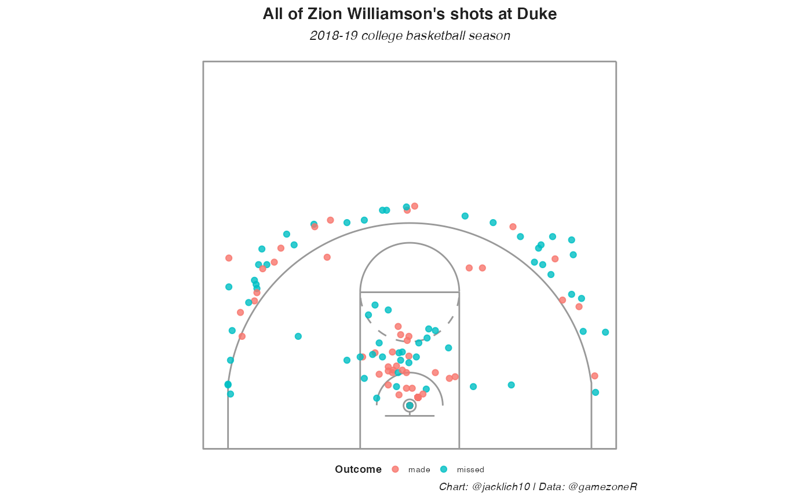

intro-to-gamezoneR.RmdWe will be acquiring data from gamezone.stats.com, using the gamezoneR package, created by Jack Lichtenstein.
This tutorial will require the use of R and RStudio. You can follow the instructions at R Studio on how to get started.
##
## Attaching package: 'dplyr'## The following objects are masked from 'package:stats':
##
## filter, lag## The following objects are masked from 'package:base':
##
## intersect, setdiff, setequal, unionThere are two functions to scrape schedules: - gamezoneR::get_master_schedule() - gamezoneR::get_team_schedule()
The gamezoneR::get_master_schedule() function has a parameter for ranked_games, which is a logical argument specifying whether or not to scrape only the games on that date where at least one team is ranked in the AP top 25 poll. Turning this off will scrape all completed games from the inputted date, regardless of whether a team is ranked or not.
Please note that specifying ranked_games = T increases the speed of the function because it utilizes the underlying API, while ranked_games = F does not.
# first, the ranked games for a given date
schedule <- gamezoneR::get_master_schedule(date = "2021-03-10", ranked_games = T)## ℹ Scraping ranked games master schedule for: 2021-03-10
dplyr::glimpse(schedule)## Rows: 1
## Columns: 18
## $ date_time <chr> "9:30 PM ET | Mar 10, 2021"
## $ game_id <chr> "2317212"
## $ tv <chr> "ESPN"
## $ home_abbr <chr> "Okla"
## $ home_ap_ranking <int> 25
## $ home_id <int> 1558
## $ home_location <chr> "Oklahoma"
## $ home_logo_id <chr> "OklahomaSooners"
## $ home_name <chr> "Sooners"
## $ home_total <dbl> 46
## $ home_record <chr> "14-9"
## $ away_abbr <chr> "IaSt"
## $ away_id <int> 1450
## $ away_location <chr> "Iowa State"
## $ away_logo_id <chr> "IowaStateCyclones"
## $ away_name <chr> "Cyclones"
## $ away_total <dbl> 32
## $ away_record <chr> "2-21"
# then, all the games for a given date
schedule <- gamezoneR::get_master_schedule(date = "2021-03-10", ranked_games = F)## ℹ Scraping master GameZone schedule for: 2021-03-10
## Returning only completed games...
dplyr::glimpse(schedule)## Rows: 24
## Columns: 9
## $ season <chr> "2020-21", "2020-21", "2020-21", "2020-21", "2020-21",…
## $ game_date <chr> "2021-03-10", "2021-03-10", "2021-03-10", "2021-03-10"…
## $ game_id <dbl> 2316847, 2316777, 2317141, 2316848, 2316778, 2316884, …
## $ home <chr> "Sac", "NCSU", "San Jose St.", "NoAri", "Miami (FL)", …
## $ away <chr> "NoCol", "Syracuse", "Wyoming", "Portland St.", "Clems…
## $ home_total <dbl> 83, 68, 80, 77, 67, 49, 62, 59, 52, 64, 55, 67, 63, 11…
## $ away_total <dbl> 90, 89, 111, 66, 64, 68, 74, 64, 80, 69, 52, 63, 80, 1…
## $ home_ap_ranking <dbl> NA, NA, NA, NA, NA, NA, NA, NA, NA, NA, NA, NA, NA, NA…
## $ away_ap_ranking <dbl> NA, NA, NA, NA, NA, NA, NA, NA, NA, NA, NA, NA, NA, NA…We are able to scrape games by date, but also by team using the gamezoneR::get_team_schedule() function.
duke_schedule <- gamezoneR::get_team_schedule(team = "Duke", season = "2018-19")## ℹ Scraping 2018-19 season for: Duke
dplyr::glimpse(duke_schedule)## Rows: 34
## Columns: 23
## $ season <chr> "2018-19", "2018-19", "2018-19", "2018-19", "2018-19",…
## $ start_time <chr> "9:49 PM ET", "1:00 PM ET", "7:00 PM ET", "6:09 PM ET"…
## $ game_date <date> 2018-11-06, 2018-11-11, 2018-11-14, 2018-11-19, 2018-…
## $ game_id <dbl> 2083190, 2087019, 2087022, 2082919, 2082916, 2082915, …
## $ tv <chr> "ESPN", "ESPN", "ACCN", "ESP2", "ESPN", "ESPN", "ESPN"…
## $ home <chr> "Kentucky", "Duke", "Duke", "San Diego State", "Duke",…
## $ away <chr> "Duke", "Army West Point", "Eastern Michigan", "Duke",…
## $ home_abbr <chr> "Kty", "Duke", "Duke", "SDSU", "Duke", "Gonz", "Duke",…
## $ home_ap_ranking <int> 2, 4, 1, NA, 1, 3, 3, 3, 3, 3, 2, 2, 1, NA, 13, 1, 1, …
## $ home_id <int> 1459, 1388, 1388, 1592, 1388, 1423, 1388, 1388, 1388, …
## $ home_logo_id <chr> "KentuckyWildcats", "DukeBlueDevils", "DukeBlueDevils"…
## $ home_name <chr> "Wildcats", "Blue Devils", "Blue Devils", "Aztecs", "B…
## $ home_total <dbl> 84, 94, 84, 64, 78, 89, 90, 113, 84, 91, 101, 69, 87, …
## $ home_is_winner <lgl> NA, TRUE, TRUE, NA, TRUE, TRUE, TRUE, TRUE, TRUE, TRUE…
## $ home_record <chr> "0-1", "2-0", "3-0", "2-1", "5-0", "6-0", "6-1", "7-1"…
## $ away_abbr <chr> "Duke", "Army", "EastMi", "Duke", "Auburn", "Duke", "I…
## $ away_ap_ranking <int> 4, NA, NA, 1, 8, 1, NA, NA, NA, NA, NA, 12, NA, 1, 1, …
## $ away_id <int> 1388, 1298, 1394, 1388, 1299, 1388, 1446, 1629, 1430, …
## $ away_is_winner <lgl> TRUE, NA, NA, TRUE, NA, NA, NA, NA, NA, NA, NA, NA, NA…
## $ away_logo_id <chr> "DukeBlueDevils", "ArmyWestPointBlackKnights", "Easter…
## $ away_name <chr> "Blue Devils", "Black Knights", "Eagles", "Blue Devils…
## $ away_total <dbl> 118, 72, 46, 90, 72, 87, 69, 49, 54, 58, 50, 58, 68, 8…
## $ away_record <chr> "1-0", "1-1", "3-1", "4-0", "4-1", "5-1", "5-2", "1-8"…Now that we have a schedule to work with, we can use the gamezoneR::game_zone_cbb_pbp() function to scrape play-by-play data for individual gameIds. The argument sub_parse is a logical parameter specifying whether or not to attempt to parse substitution and lineup data. If TRUE, the play-by-play will be appended to include columns home_1 through away_5, specifying the names of the 10 players on the floor.
Please note that GameZone does not track all substitutions. As a result, a new column, sub_error will reside in the appended play-by-play data. I have not come across many games with no such errors
pbp <- gamezoneR::game_zone_cbb_pbp(schedule$game_id[2],
sub_parse = T)## ● Scraping GameID: 2316777## ● Attempting to parse lineup and substitution data...
## Note that GameZone does not track all substitutions## ✔ Completed GameID: 2316777
## North Carolina State @ Syracuse
pbp %>%
dplyr::count(sub_error)## # A tibble: 3 x 2
## sub_error n
## <chr> <int>
## 1 Player leaving not previously in game 2
## 2 Sub already in game 9
## 3 <NA> 307
dplyr::glimpse(pbp)## Rows: 318
## Columns: 37
## $ season <chr> "2020-21", "2020-21", "2020-21", "2020-21", "2020-…
## $ date <date> 2021-03-10, 2021-03-10, 2021-03-10, 2021-03-10, 2…
## $ game_id <dbl> 2316777, 2316777, 2316777, 2316777, 2316777, 23167…
## $ play_id <int> 1, 1, 1, 1, 1, 1, 1, 1, 1, 1, 2, 3, 4, 5, 6, 7, 8,…
## $ half <int> 1, 1, 1, 1, 1, 1, 1, 1, 1, 1, 1, 1, 1, 1, 1, 1, 1,…
## $ home <chr> "Syracuse", "Syracuse", "Syracuse", "Syracuse", "S…
## $ away <chr> "North Carolina State", "North Carolina State", "N…
## $ home_score <dbl> 0, 0, 0, 0, 0, 0, 0, 0, 0, 0, 0, 0, 2, 2, 2, 2, 2,…
## $ away_score <dbl> 0, 0, 0, 0, 0, 0, 0, 0, 0, 0, 0, 2, 2, 2, 2, 2, 2,…
## $ score_diff <dbl> 0, 0, 0, 0, 0, 0, 0, 0, 0, 0, 0, -2, 0, 0, 0, 0, 0…
## $ team_id <dbl> 1633, 1538, 1633, 1538, 1538, 1633, 1538, 1633, 15…
## $ event_team <chr> "Syracuse", "North Carolina State", "Syracuse", "N…
## $ game_secs_remaining <dbl> NA, NA, NA, NA, NA, NA, NA, NA, NA, NA, 2400, 2379…
## $ half_secs_remaining <dbl> NA, NA, NA, NA, NA, NA, NA, NA, NA, NA, 1200, 1179…
## $ play_length <dbl> NA, NA, NA, NA, NA, NA, NA, NA, NA, NA, NA, 21, 21…
## $ desc <chr> "Starting Lineup - Buddy Boeheim", "Starting Lineu…
## $ shot_outcome <chr> NA, NA, NA, NA, NA, NA, NA, NA, NA, NA, NA, "made"…
## $ free_throw <lgl> FALSE, FALSE, FALSE, FALSE, FALSE, FALSE, FALSE, F…
## $ three_pt <lgl> FALSE, FALSE, FALSE, FALSE, FALSE, FALSE, FALSE, F…
## $ shot_desc <chr> NA, NA, NA, NA, NA, NA, NA, NA, NA, NA, NA, "Jump …
## $ loc_x <dbl> NA, NA, NA, NA, NA, NA, NA, NA, NA, NA, NA, 11.0, …
## $ loc_y <dbl> NA, NA, NA, NA, NA, NA, NA, NA, NA, NA, NA, 12.25,…
## $ shooter_id <int> NA, NA, NA, NA, NA, NA, NA, NA, NA, NA, NA, 113228…
## $ shooter <chr> NA, NA, NA, NA, NA, NA, NA, NA, NA, NA, NA, "Manny…
## $ assist <chr> NA, NA, NA, NA, NA, NA, NA, NA, NA, NA, NA, "Dereo…
## $ substitution <dbl> 1, 1, 1, 1, 1, 1, 1, 1, 1, 1, 0, 0, 0, 0, 0, 0, 0,…
## $ sub_error <chr> NA, NA, NA, NA, NA, NA, NA, NA, NA, NA, NA, NA, NA…
## $ home_1 <chr> "Buddy Boeheim", "Buddy Boeheim", "Buddy Boeheim",…
## $ home_2 <chr> "Quincy Guerrier", "Quincy Guerrier", "Quincy Guer…
## $ home_3 <chr> "Alan Griffin", "Alan Griffin", "Alan Griffin", "A…
## $ home_4 <chr> "Joseph Girard III", "Joseph Girard III", "Joseph …
## $ home_5 <chr> "Marek Dolezaj", "Marek Dolezaj", "Marek Dolezaj",…
## $ away_1 <chr> "Cam Hayes", "Cam Hayes", "Cam Hayes", "Cam Hayes"…
## $ away_2 <chr> "Dereon Seabron", "Dereon Seabron", "Dereon Seabro…
## $ away_3 <chr> "D.J. Funderburk", "D.J. Funderburk", "D.J. Funder…
## $ away_4 <chr> "Manny Bates", "Manny Bates", "Manny Bates", "Mann…
## $ away_5 <chr> "Jericole Hellems", "Jericole Hellems", "Jericole …Now, let’s scrape all of Duke’s games from the Zion Williamson 2018-19 season using purrr::map_df().
duke_pbp <- purrr::map_df(duke_schedule$game_id,
gamezoneR::game_zone_cbb_pbp, sub_parse = F)Let’s plot some shot charts. We will use the built in gamezoneR::base_court ggplot court.
duke_shots <- duke_pbp %>%
dplyr::filter(!is.na(loc_x),
shooter == "Zion Williamson")
gamezoneR::base_court +
ggplot2::geom_point(data = duke_shots,
ggplot2::aes(loc_x, loc_y, color = shot_outcome),
alpha = 0.8) +
ggplot2::theme(axis.line = ggplot2::element_blank(),
axis.text= ggplot2::element_blank(),
axis.ticks = ggplot2::element_blank(),
axis.title = ggplot2::element_blank(),
panel.background = ggplot2::element_blank(),
panel.grid = ggplot2::element_blank(),
plot.title = ggplot2::element_text(face = "bold", hjust = 0.5, size = 30/ggplot2::.pt, margin = ggplot2::margin(0, 0, 5, 0)),
plot.subtitle = ggplot2::element_text(face = "italic", hjust = 0.5, size = 24/ggplot2::.pt),
plot.caption = ggplot2::element_text(face = "italic", hjust = 1, size = 20/ggplot2::.pt, margin = ggplot2::margin(0, 0, 0, 0)),
legend.spacing.x = grid::unit(0, 'cm'),
legend.title = ggplot2::element_text(size = 20/ggplot2::.pt, face = "bold"),
legend.text = ggplot2::element_text(size = 16/ggplot2::.pt),
legend.margin = ggplot2::margin(0, 0, 0, 0),
legend.position = 'bottom',
legend.box.margin = ggplot2::margin(-35, 0, 0, 0),
plot.margin = ggplot2::margin(5, 0, 5, 0)) +
ggplot2::labs(title = "All of Zion Williamson's shots",
subtitle = "Duke 2018-19 season",
color = "Outcome",
caption = "Chart: @jacklich10 | Data: @gamezoneR")